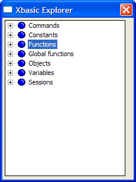
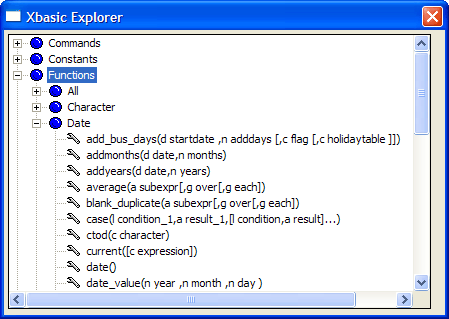
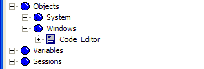
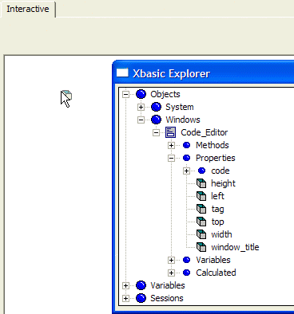

Xbasic Explorer - Learning Xbasic

You saw previously that you can look for a global function using the Function Finder window. There is another tool available in Alpha Anywhere that enables you to quickly lookup and identify built-in functions, global functions and other Xbasic commands, variables, and components. This tool is called the Xbasic Explorer.
The Xbasic Explorer is available whenever
you are in the Code Editor. You can load
it from the toolbar by clicking on the wrench symbol  .
Or you can select View > Xbasic Explorer
from the Code Editor
menu.
.
Or you can select View > Xbasic Explorer
from the Code Editor
menu.
The Xbasic Explorer, shown at right, is a pop-up window that shows in a tree structure the categories of all the different Alpha Anywhere components that you use when you create a script in Xbasic.
When you expand any of the nodes of the tree, you will see all of the available Xbasic entities for that category or sub-categories, if applicable.
For example, if you expand the "Functions" node, you will see the categories for all the built-in functions. If you expand one of the sub-category nodes, you will see all the functions classified in that sub-category as shown in the next figure for the date functions category.

Figure 74
Under the "Functions" node, you will be able to see all of your own functions. The Xbasic Explorer brings together in one conveniently accessible window all of the possible entries for Xbasic script command lines.
In addition, you can drag-and-drop any of the leaf node entries from the Xbasic Explorer into the Code Editor. This is especially useful when you are selecting objects and their corresponding methods or properties. If you drag-and-drop an object method or property, the absolute reference to that object method or property will appear in your script.
Exercise 15 - Drag-Drop from the Xbasic Explorer
Open the Interactive window and the Xbasic Explorer.
Expand the "Objects" node
Expand the "Windows" node
Expand the "Code_Editor" node.
Expand the "Properties" node.
Drag the property "window_title" into the Interactive window. To drag, click and hold down the left mouse button on top of the item you wish to drag. While still holding down the mouse button, move the mouse cursor to the place you wish to move the reference to. When you have reached the position you want, release the mouse button to drop the reference.
Put a question mark and space at the front of the line and press Enter. Alpha Anywhere shows:
Drag another reference for "window_title" into the Interactive window.
At the end of the new line you are creating type:
On a new line type:
Type:
Close the Xbasic Explorer and the Interactive Window.
You see the "Code Editor" window object:

Figure 75
|
The Xbasic Explorer only shows active objects. (In other words, form or other layouts that you have defined in your database but are not currently loaded will not appear). Since the Code Editor is the only active window, that is the only window object shown. |

Figure 76
When you drop the item, the Interactive window will show:
|
Code_Editor.window_title |
which is the full reference to the window property.
|
= Code Editor |
|
= "My Code Editor Title" |
and press Enter. The Code Editor window has a new title.
|
Form.load("Sign In") |
and press Enter. When you press Enter, the Xbasic Explorer is refreshed.
Now that you have loaded another window, the Xbasic Explorer shows both the "Code Editor" and "Sign In" windows in the "Objects" tree branch.
|
:Sign_in.close() |
and press Enter. The reference to the Sign In window is no longer in the Xbasic Explorer.
Next